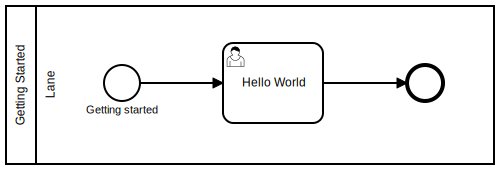

Hello World
Let's start with the all time classic example Hello World.
We want to execute a BPMN diagram with a single user task, that will look like this:

This user task will show us the Hello World message as well as a confirm dialog to end the task.
Creating a new diagram
Open the process manager and click on the +-button on the top left to create a new process.
You need to specify the name of the process and the key used to reference the diagram.
For now, let's just use Hello World for both.
Double clicking the newly created diagram will get you into the detail view.
Modeling the diagram
You can now see the BPMN editor showing your diagram with only a lane and a start event.
When selecting an element, you can create new elements that are already connected to the selected one by using the context-menu.
Looks fine so far, but the process still needs to be made executable.
Integrating the diagram
TODO: The role has to be set to guest. This needs to be documented
If we want the process engine to render a UI, it needs to know what we want the UI to look like.
We can specify that with key/value pairs by using the Extensions panel on the right side of the editor.
Setting uiName tells the process engine what kind of UI component we want to use. For now, a confirm dialog is a good example.
Setting uiConfig specifies the details for the UI component - in this case the message and buttons to display.
${ "message": "Hello World!", "layout": [ { "key": "confirm", "label": "OK" } ] };
Now we configured what the user task should look like in the UI - time to execute!